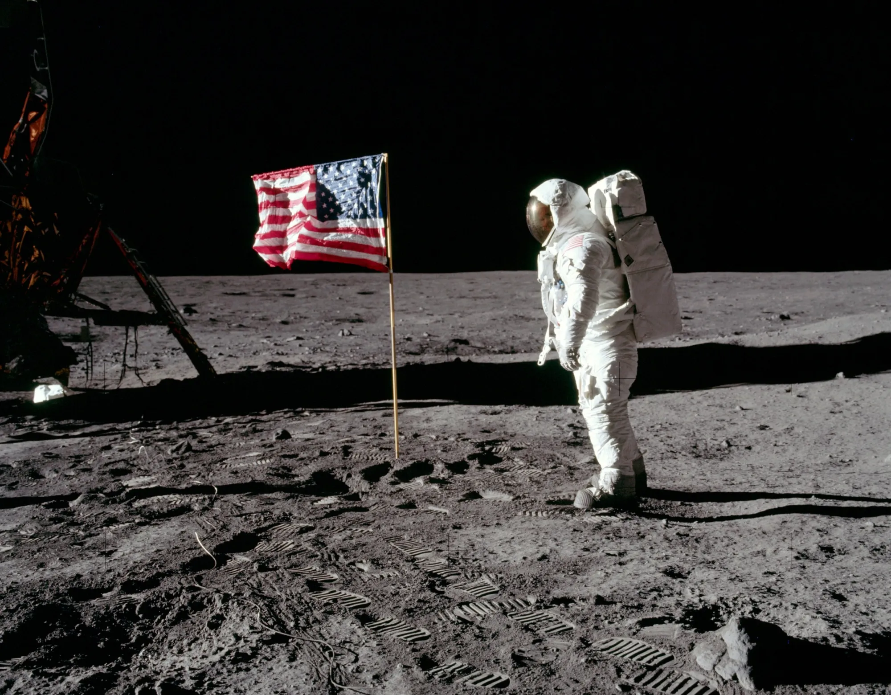
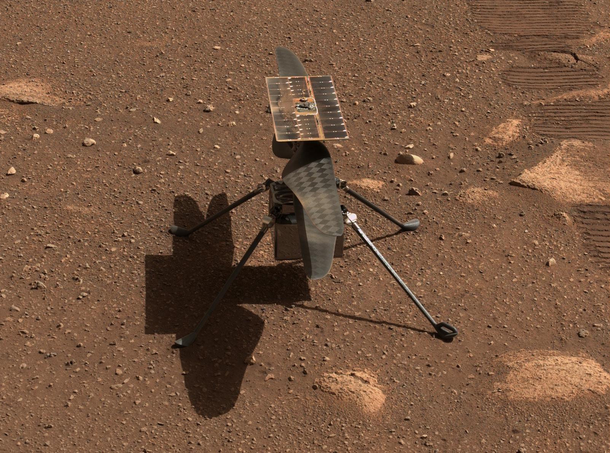
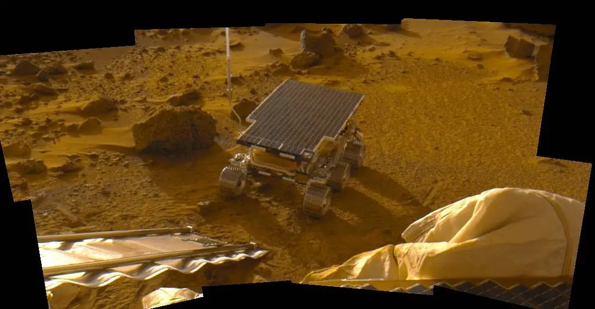

1969 — 2024
Milestones Beyond Earth
Explore the missions that changed our understanding
of the Moon and Mars.
1969

THE MOON · APOLLO PROGRAM
Apollo 11
On July 20, 1969, Apollo 11 achieved the first
human landing on the Moon. After the astronauts
returned to lunar orbit, the Lunar Module's
descent stage remained on the surface.
Left behind:
Lunar Module descent stage and scientific equipment.
1971

THE MOON · LUNAR EXPLORATION
Apollo 15
Apollo 15 introduced the Lunar Roving Vehicle,
allowing astronauts to travel farther across
the lunar surface and collect more samples.
Left behind:
The Lunar Roving Vehicle at the landing site.
1976

MARS · VIKING PROGRAM
Viking 1 & 2
NASA's Viking landers successfully reached
the Martian surface. They studied the soil,
atmosphere and environment, sending important
scientific findings back to Earth.
Left behind:
Two stationary landers on Mars.
1997

MARS · ROBOTIC EXPLORATION
Mars Pathfinder
Pathfinder delivered Sojourner, the first
successful rover to operate on Mars.
The small robotic explorer examined nearby
rocks and sent scientific observations to Earth.
Left behind:
Pathfinder lander and Sojourner rover.
2004

MARS · TWIN ROVER MISSIONS
Spirit & Opportunity
These twin rovers explored different regions
of Mars and found evidence of ancient
water-related environments. Both operated
far beyond their original planned missions.
Left behind:
Two rovers. Spirit's mission ended in 2011
and Opportunity's in 2019.
2024

MARS · AERIAL EXPLORATION
Ingenuity Helicopter
Ingenuity became the first aircraft to achieve
powered, controlled flight on another planet.
After completing 72 flights, its final flight
took place on January 18, 2024.
Left behind:
The Ingenuity helicopter on the Martian surface.
MISSION LEGACY
What Remains Beyond Earth?
The equipment left behind tells a story of discovery
long after a mission ends.

Scientific Instruments
Experiments left on the Moon collected
information about its environment.

Robotic Explorers
Robotic vehicles explored distant surfaces
and collected valuable scientific data.

Landing Equipment
Spacecraft landing stages and equipment
became part of their landing locations.